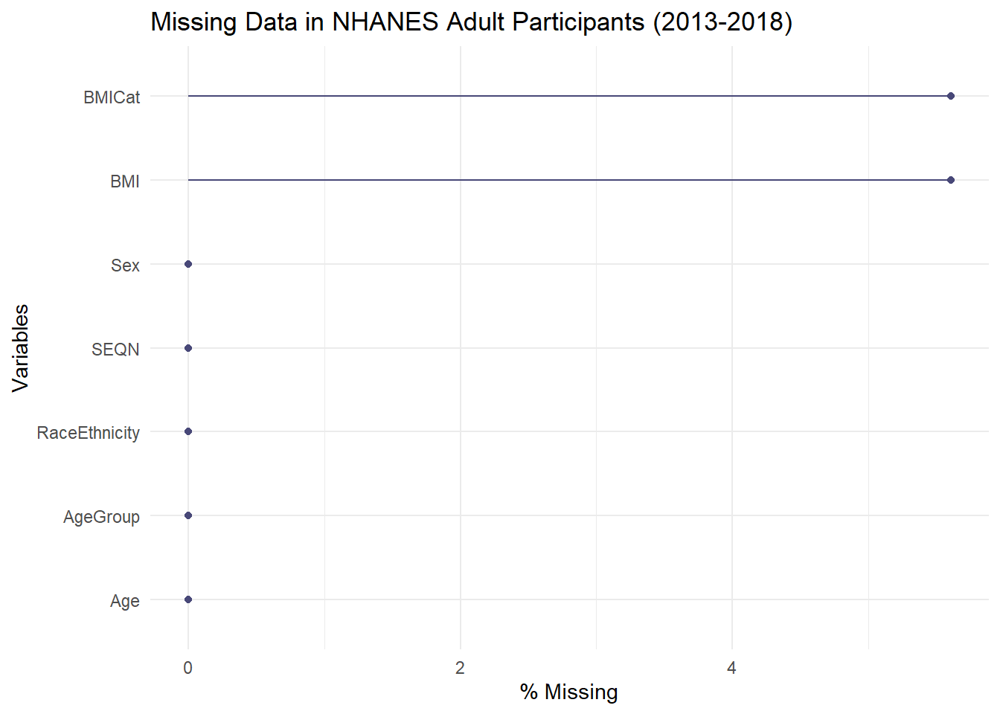

Exercise 3 Solution (A)
Exercise: Phased Multi-Year NHANES Data Wrangling
Instructions: Use the R programming language and functions from the tidyverse, nhanesA, tableone, and naniar packages to complete this exercise. We will build up our dataset in phases, starting with a single year and expanding to multiple survey cycles.
Please knit your final R Markdown file and submit the knitted HTML or PDF document ONLY.
Setup: Load Packages
First, run the following code block to ensure the required packages are installed and loaded into your R session.
Problem 1: Import and Translate Single-Year Data
Download the Demographic (DEMO) data for the 2013-2014 NHANES cycle, using translated = TRUE to automatically convert coded values into text labels.
# Download and translate the 2013-2014 demographic data
nhanes_demo_1314 <- nhanes("DEMO_H", translated = TRUE)
# Check the first few rows to see the translated values
head(nhanes_demo_1314[, c("SEQN", "RIAGENDR", "RIDAGEYR", "RIDRETH3")])Problem 2: Add Body Measures Data for a Single Year
Download the Body Measures (BMX) data for the same 2013-2014 cycle and merge it with the demographic data from Problem 1.
# Download the 2013-2014 body measures data
nhanes_bmx_1314 <- nhanes("BMX_H", translated = TRUE)
# Merge the BMX data with the DEMO data from Problem 1
nhanes_1314_complete <- full_join(nhanes_demo_1314, nhanes_bmx_1314, by = "SEQN")
# Check the dimensions of the merged dataset
dim(nhanes_1314_complete)
#> [1] 10175 72Problem 3: Import and Merge Multi-Cycle Data with Translation
Expand to multiple years, using translated = TRUE for all downloads. Merge both the Demographic (DEMO) and Body Measures (BMX) data for all three NHANES cycles: 2013-2014 (H), 2015-2016 (I), and 2017-2018 (J). Combine them into a single dataframe named nhanes_raw.
# Define the cycles to download
cycles <- c("H", "I", "J")
# Create a list to store data from each cycle
all_cycles_data <- list()
# Loop through each cycle, download with translation, and merge the data
for (cycle_code in cycles) {
demo_data <- nhanes(paste0("DEMO_", cycle_code), translated = TRUE)
bmx_data <- nhanes(paste0("BMX_", cycle_code), translated = TRUE)
all_cycles_data[[cycle_code]] <- full_join(demo_data, bmx_data, by = "SEQN")
}
# Combine the data from all cycles into one dataframe
nhanes_raw <- bind_rows(all_cycles_data)
# Check the dimensions of the final raw dataset
dim(nhanes_raw)
#> [1] 29400 78Problem 4: Data Cleaning and Filtering
Using the nhanes_raw dataset, we will now create our clean dataset. This involves filtering our population to adults and then creating our analysis variables.
- Filter for Adults: Keep only participants aged 20 years or older.
-
Rename Variables:
RIAGENDRtoSex,RIDAGEYRtoAge,RIDRETH3toRaceEthnicity,BMXBMItoBMI. -
Group
RaceEthnicity: Combine “Mexican American” and “Other Hispanic” into a single “Hispanic” category. -
Create
AgeGroup: CategorizeAgeinto “20-39”, “40-59”, and “60+”. -
Create
BMICat: CategorizeBMIinto “Underweight”, “Normal weight”, “Overweight”, and “Obese”.
nhanes_clean <- nhanes_raw %>%
# Step 1: Filter the data to include only adults
filter(RIDAGEYR >= 20) %>%
# Step 2: Rename variables
rename(
Sex = RIAGENDR,
Age = RIDAGEYR,
RaceEthnicity = RIDRETH3,
BMI = BMXBMI
) %>%
# Create new variables
mutate(
# Step 3: Group the detailed race categories into broader ones
RaceEthnicity = case_when(
RaceEthnicity %in% c("Mexican American", "Other Hispanic") ~ "Hispanic",
RaceEthnicity == "Non-Hispanic White" ~ "Non-Hispanic White",
RaceEthnicity == "Non-Hispanic Black" ~ "Non-Hispanic Black",
RaceEthnicity == "Non-Hispanic Asian" ~ "Non-Hispanic Asian",
TRUE ~ "Other" # Groups "Other Race - Including Multi-Racial" and any NAs
),
# Convert the new character RaceEthnicity to a factor with the desired level order
RaceEthnicity = factor(RaceEthnicity,
levels = c("Non-Hispanic White", "Non-Hispanic Black", "Hispanic", "Non-Hispanic Asian", "Other")),
# Step 4: Create AgeGroup (now without NAs because we filtered)
AgeGroup = cut(Age,
breaks = c(19, 39, 59, Inf),
labels = c("20-39", "40-59", "60+"),
right = TRUE),
# Step 5: Create BMICat
BMICat = cut(BMI,
breaks = c(0, 18.5, 25, 30, Inf),
labels = c("Underweight", "Normal weight", "Overweight", "Obese"),
right = FALSE)
)
# Check the structure to confirm variables are correct
str(nhanes_clean[, c("SEQN", "Sex", "Age", "AgeGroup", "RaceEthnicity", "BMI")])
#> 'data.frame': 17057 obs. of 6 variables:
#> $ SEQN : num 73557 73558 73559 73561 73562 ...
#> $ Sex : Factor w/ 2 levels "Male","Female": 1 1 1 2 1 2 1 2 1 2 ...
#> $ Age : num 69 54 72 73 56 61 42 56 65 26 ...
#> $ AgeGroup : Factor w/ 3 levels "20-39","40-59",..: 3 2 3 3 2 3 2 2 3 1 ...
#> $ RaceEthnicity: Factor w/ 5 levels "Non-Hispanic White",..: 2 1 1 1 3 1 3 1 1 1 ...
#> $ BMI : num 26.7 28.6 28.9 19.7 41.7 35.7 NA 26.5 22 20.3 ...Problem 5: Create Final Analytic Dataset
Create a final, analysis-ready dataset named nhanes_analysis that includes only the key variables.
nhanes_analysis <- select(nhanes_clean, SEQN, Sex, Age, AgeGroup, RaceEthnicity, BMI, BMICat)
# Display the structure of the final analytic dataset
str(nhanes_analysis)
#> 'data.frame': 17057 obs. of 7 variables:
#> $ SEQN : num 73557 73558 73559 73561 73562 ...
#> $ Sex : Factor w/ 2 levels "Male","Female": 1 1 1 2 1 2 1 2 1 2 ...
#> $ Age : num 69 54 72 73 56 61 42 56 65 26 ...
#> $ AgeGroup : Factor w/ 3 levels "20-39","40-59",..: 3 2 3 3 2 3 2 2 3 1 ...
#> $ RaceEthnicity: Factor w/ 5 levels "Non-Hispanic White",..: 2 1 1 1 3 1 3 1 1 1 ...
#> $ BMI : num 26.7 28.6 28.9 19.7 41.7 35.7 NA 26.5 22 20.3 ...
#> $ BMICat : Factor w/ 4 levels "Underweight",..: 3 3 3 2 4 4 NA 3 2 2 ...Problem 6: Investigate Missing Data
Now that our data is correctly filtered and processed, let’s re-examine the missing data patterns. The missingness should be much lower.
# 1. Count missing values for each column
missing_counts <- colSums(is.na(nhanes_analysis))
print(missing_counts)
#> SEQN Sex Age AgeGroup RaceEthnicity
#> 0 0 0 0 0
#> BMI BMICat
#> 956 956
# 2. Visualize the missing data
gg_miss_var(nhanes_analysis, show_pct = TRUE) +
labs(title = "Missing Data in NHANES Adult Participants (2013-2018)")
Problem 7: Create a Descriptive Table
Finally, with the data correctly loaded and cleaned for our adult population, create the summary table of sample characteristics, stratified by Sex.
# Define the variables for the table
vars <- c("Age", "AgeGroup", "RaceEthnicity", "BMI", "BMICat")
# Create the table, stratified by Sex
tab1 <- CreateTableOne(vars = vars, data = nhanes_analysis, strata = "Sex", addOverall = TRUE, test = FALSE)
# Print the table, showing all levels and missing data counts
print(tab1, smd = FALSE, showAllLevels = TRUE, missing = TRUE)
#> Stratified by Sex
#> level Overall Male
#> n 17057 8207
#> Age (mean (SD)) 50.03 (17.74) 50.23 (17.83)
#> AgeGroup (%) 20-39 5594 (32.8) 2687 (32.7)
#> 40-59 5571 (32.7) 2612 (31.8)
#> 60+ 5892 (34.5) 2908 (35.4)
#> RaceEthnicity (%) Non-Hispanic White 6270 (36.8) 3094 (37.7)
#> Non-Hispanic Black 3673 (21.5) 1759 (21.4)
#> Hispanic 4290 (25.2) 1978 (24.1)
#> Non-Hispanic Asian 2168 (12.7) 1034 (12.6)
#> Other 656 ( 3.8) 342 ( 4.2)
#> BMI (mean (SD)) 29.49 (7.21) 28.93 (6.33)
#> BMICat (%) Underweight 247 ( 1.5) 105 ( 1.4)
#> Normal weight 4244 (26.4) 1966 (25.5)
#> Overweight 5168 (32.1) 2853 (37.0)
#> Obese 6442 (40.0) 2790 (36.2)
#> Stratified by Sex
#> Female Missing
#> n 8850
#> Age (mean (SD)) 49.86 (17.66) 0.0
#> AgeGroup (%) 2907 (32.8) 0.0
#> 2959 (33.4)
#> 2984 (33.7)
#> RaceEthnicity (%) 3176 (35.9) 0.0
#> 1914 (21.6)
#> 2312 (26.1)
#> 1134 (12.8)
#> 314 ( 3.5)
#> BMI (mean (SD)) 30.01 (7.90) 5.6
#> BMICat (%) 142 ( 1.7) 5.6
#> 2278 (27.2)
#> 2315 (27.6)
#> 3652 (43.5)